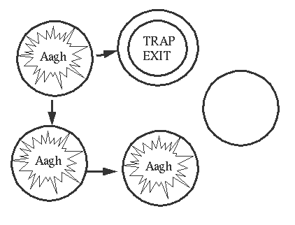
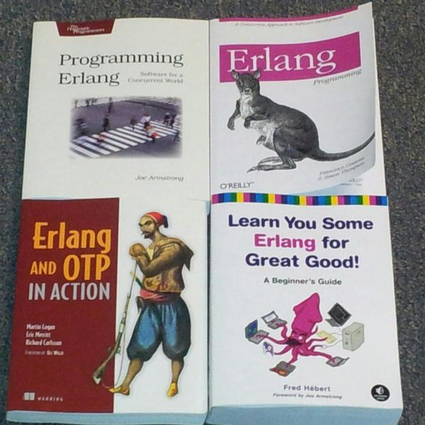

Erlang and the OTP libraries
A quick introduction
Robert Ellen
Summary
Erlang and the Open Telecom Platform (OTP) are a language, system and platform that are well-established but experiencing a resurgence in popularity

Erlang and the OTP libraries
are a 'battle-tested' platform for developing (soft) real-time software with very high performance and reliability
About me...
- electronics/ software engineer by qualification
- contractor at Carlton & Unitied Breweries' Yatala brewery
- engineering and information systems
- using Erlang (among other tools) for Masters-level research to implement/ demonstrate my ideas
Overview
- What is Erlang?
- A quick history lesson
- Basics of the language
- The runtime system
- The OTP libraries
- Users and uses
- Next steps
What is Erlang?
- Erlang is a dynamic programming language with functional features
- Labeling Erlang a functional language is somewhat controversial, especially if it is compared against FP languages such as Haskell
- The sequential sub-set of Erlang is, however, pretty much functional
What is Erlang?
Erlang has a runtime system (ERTS) that provides powerful and efficient concurrency, parallelism and distribution
What is Erlang?
The Erlang distribution comes with a set of libraries known as the Open Telecom Platform (OTP) that actually allow the Erlang platform to do what it says it can do on the box, with regards to robustness etc
What is Erlang?
Most of the time, when we think of Erlang and its capabilities, we are really referring to ERTS and OTP
A brief history of Erlang and OTP
Summary from Erlang Programming, Cesarini & Thompson O'Reilly Media Inc, and various resources found on the Erlang Wikipedia entry
Joe Armstrong, Robert Virding and Mike Williams, under the supervision of Bjarne Däcker were tasked with prototyping telecom applications with existing languages
The team found that no one language provided everything that a telecom application needed
A decision was made to invent a new language
Erlang (Ericsson Language) was born!
Erlang was influenced by several languages
- functional: ML, Miranda
- concurrent: Ada, Modula, Chill
- logic: Prolog
- others: Smalltalk (code upgrade) and EriPascal and PLEX (older Ericsson languages)
Originally implemented with a Prolog VM, Erlang was refined over four years
There were several principles guiding Erlang's design, such as:
- Errors will occur/ let it crash
- The system must keep running
Mike Williams wrote the first C-based VM in 1991
In 1992 the first commercial Erlang-based project (cordless phone mobility product) was started and was launched in 1994
In 1995, Erlang was mature enough to be used in larger telephony projects
The OTP libraries were released in 1996
In 1998, the AXD301 switch was announced, and reportedly has 1-2 million lines of Erlang and achieved nine 9's uptime
In early 1998, Erlang was banned from Ericsson, citing a want to be a consumer of software technologies, not a producer
Joe Armstrong and many of the Erlang team left Ericsson at that time
In late 1998, Erlang and OTP were released under an Open Source license and have been freely available ever since
Subsequently the ban has been lifted and Armstrong rejoined Ericsson in 2004
Basics of the language
Erlang, as a language, is fairly simple and concise
- Sequential subset
- strictly evaluated
- has a simple dynamic, yet strong type system
- has single assignment on 'variables'
- has its concurrency features built into the language and type system themselves (not a library)
- spawning, linking and message passing between light-weight processes
But is it a functional language?
Erlang doesn't have the functional programming machinery of Haskell or Scala...
...but it's certainly not without plenty of features you'd expect in a language that is functional...
...and the sequential sub-set of the language can be considered functional
Functional language features
- Lambda expressions and closures are simple...
- ...but currying and partial application are hard, if not impossible
- powerful pattern matching, moving conditional logic to the outside of functions
- strictly/ eagerly evaluated, so no infinite lists etc
- functions, while declarative and SSA, are impure, side effects can occur in any context, deep in the call stack...
- ...but it could be argued, however, that side-effects (such as I/O) occur only in the concurrent part of the language (through the actor/ process interface [more later])
- Dialyzer - static code analysis and type checking
Selected features in (a little) detail
Modules and Functions
Modules
- are the unit of compilation in Erlang
- are a collection of functions and other declarations and definitions
- have a name, and are implemented in a file called
moduleName.erl - flat name space
A simple module
-module(my_module). % module name % module attributes -export([add/2, square/1, square_add/2, print_square/1]). % functions (with arity) to be exported % function declarations add(X,Y) -> X + Y. square(X) -> X * X. square_add(X,Y) -> Z = add(X,Y), square(Z). print_square(X) -> io:format("The square of ~p is: ~p\n", [X, square(X)]).
Compiling and using my_module
shell V5.10.3 (abort with ^G) 1> c(my_module). {ok,my_module} 2> my_module:add(1,2). 3 3> my_module:square_add(3,5). 64 4> my_module:print_square(9). The square of 9 is: 81 ok 5>
- Line 1 (
c(my_module).) createsmy_module.beam, which is the byte-code file for the module that gets executed -
my_module.beamcan also be generated by the Erlang compiler on the command-line with$erlc my_module.erl
Do you mean Recursion?
Erlang does not have loops, recursion is used instead
-module(factorial). -export([fac/1]). fac (0) -> 1; fac (N) when N > 0 -> N * fac(N-1).
Recursion and Tail-Call Optimisation
- In many languages, Erlang included, recursion is fraught with danger, as each recursive call consumes stack
- In many languages, Erlang included, an optimisation that can avoid this problem called Tail Call Optimisation (TCO), is included in the compiler
- If a recursive call is the final call in a function (a tail call), no stack is consumed
- The old stack frame is effectively replaced with the frame of the recursive call
Recursion and Tail-Call Optimisation
We can re-write factorial to use a tail-call, by introducing an accumulator, a standard FP pattern
-module(factorial). % pretty much the same example as http://learnyousomeerlang.com/recursion -export([fac/1, tail_fac/1]). fac (0) -> 1; fac (N) when N > 0 -> N * fac(N-1). tail_fac(N) -> tail_fac(N, 1). tail_fac(0, Acc) -> Acc; tail_fac(N, Acc) when N > 0 -> tail_fac(N-1, N*Acc).
- The tail-recursive version protects against excessive stack usage
- However, even with TCO, tail-recursive implementations are not necessarily faster than their body-recursive counterparts
Higher Order Functions
Key functional programming capability - create, pass around and call functions as variables
Eshell V5.10.3 (abort with ^G) 1> Fa = fun (X) -> X + 1 end. #Fun<erl_eval.6.80484245> 2> Fa(2). 3
Closures
- Annonymously-created functions remember their calling context
- This capability can be used to implement closures - functions that are 'customised' by their calling context to be used later
3> Fb = fun(X) -> fun(Y) -> X + Y end end. #Fun<erl_eval.6.80484245> 4> Fc = Fb(5). #Fun<erl_eval.6.80484245> 5> Fc(2). 7 6> Fd = Fb(10). #Fun<erl_eval.6.80484245> 7> Fd(2). 12 8> Fc(2). 7 9>
List HoFs
lists module
filter, map, foldl, foldr, foreach
Eshell V5.10.3 (abort with ^G) 1> lists:filter(fun (X) -> X > 3 end,[1,2,3,4,5,6]). [4,5,6] 2> lists:map(fun (X) -> X * X end,[1,2,3,4,5,6]). [1,4,9,16,25,36] 3> lists:foldr(fun (X,Z) -> X * Z end, 1, [1,2,3,4,5,6]). 720 4> SumList = fun (List) -> lists:foldr (fun (X, Z) -> X + Z end, 0, List) end. #Fun<erl_eval.6.80484245> 5> SumList([1,2,3,4,5,6]). 21 6>
Let's leave the sequential subset behind, and look at concurrency
Concurrency
- Built into the language and runtime, not the OS and not a library
- The concurrency model is asynchronous message passing between light-weight processes
- Often referred to as the actor model
- Actors are not purely functional, as the result of an asynchronous message is effectively
void - Most of the well-known attributes of Erlang are based on it's concurrency implementation
The actor model
- Encapsulation
- Message passing
Spawning a process
Pid = spawn(module, function, [Argument0, Argument1, ..., ArgumentN]).
Pid is the process identifier of the newly spawned process
Sending a message
Pid ! Message.
Message can be any Erlang term
Receiving a message
receive Pattern1 -> Expression1; Pattern2 -> Expression2; ... PatternN -> ExpressionN end.
Maintaining state
loop(State) -> receive Pattern -> NewState = some_code (State), loop (NewState). end.
Concurrency Example - a simple counter
-module(counter). -export([create/0, start/0, delete/1, increment/1, count/1, reset/1]). create () -> spawn(?MODULE, start, []). start () -> loop(0). delete (Pid) -> Pid ! delete, ok. increment (Pid) -> Pid ! increment, ok. count (Pid) -> Pid ! {count, self()}, receive {Pid,{count, Count}} -> Count; _ -> error end. reset (Pid) -> Pid ! reset, ok.
loop(Count) -> receive delete -> ok; increment -> loop (Count+1); {count, Pid} -> Pid ! {self(),{count, Count}}, loop (Count); reset -> loop (0); Unexpected -> io:format ("Unexpected message: ~p~n", [Unexpected]), loop (Count) end.
Process links
- Links can be made between processes
- If a process dies, all processes linked to it are notified, and by default die too
link(Pid)orPid = spawn_link(M,F,[A])- A process can be made a 'system process' meaning it won't die if a linked process dies
Process links
 http://www.erlang.org/course/error05.gifMonitors
Are more flexible and expressive and less drastic than links
Erlang: the system
Erlang has a runtime system
that (among many other things):
- implements light-weight processes and message passing
- efficiently utilises multi-core systems to achieve parallelism on top of concurrency
- can scale from multi-core to distributed with very little (if any) code change
- allows new/ improved code to be hot-loaded
- has multiple facilities to integrate with other languages, esp C/C++
ERTS - Erlang Runtime System
- written in C
- BEAM - Bogdan's Erlang Abstract Machine (VM)
- compilation to byte code
- originally just interpreted, as it was viewed that the BEAM interpreter was fast enough
- more recently, a native JiT compiler has been used (HiPE)
- From now on in this talk VM, BEAM and ERTS are synonymous
Erlang Processes
- Erlang processes are light-weight processes, ~300 words memory overhead each, created in microseconds
- VM manages message passing between processes...
- ...by copying the message (in memory) from process to process in a lock-free manner
- Not all light-weight process or actor libraries are the same...
- unlike, say Akka, Erlang processes are isolated from each other and won't crash the whole VM
Concurrency and Parallelism
- VM is a single OS process
- before the days of multi-core CPUs and Symmetrical Multi-Processing (SMP)
- processes ran concurrently, but not in parallel
- more VM instances on remote machines was the only way to be parallel
- since multi-core and SMP
- VM is multi-threaded and can execute processes in parallel
- VM has one thread per CPU core for processes, plus other system threads
- did not require a change in the language, only in the VM
Processes schedulers
- each thread in the VM for running processes has a scheduler
- the scheduler handles scheduling a pool of processes in a run queue
- n:m mapping between Erlang processes and OS threads
- processes can be moved between threads to load balance
Processes schedulers
 http://learnyousomeerlang.com/static/img/schedulers.png
http://learnyousomeerlang.com/static/img/schedulers.png
Memory Management
The VM manages memory automatically and is garbage-collected (generational copying garbage collector)
- two alternating duty heaps, only active memory is copied from one to the other when they switch
- two generations of the heap are maintained, current and old
- the current generation is considered to be more likely to be transient memory
- two garbage collector sweeps are executed on different conditions
- shallow GC: as needed, only looks at the current generation, after three GCs current will become old
- deep GC: checks old as well, only triggered when shallow does not recycle enough memory
Memory Management cont'd
- process isolation means individual processes can be stopped for GC without others being affected
- short lived processes may never be GC'd (just deallocated)
- small processes are quick to GC
Hot module reloading
- The VM can detect when a .beam file has changed and load it into the system
- Only two versions of the code can be maintained in the system (old and new)
- The old version of the module still exists and is used by an processes making local calls to its functions
- An external call to the module (
module:function(Arguments)) will use the new version - This is the extent of the basic hot code loading capability in Erlang
Distributed Erlang
- Each ERTS instance is called a node
- clusters of nodes can be created and include location services etc
- remotely spawning a process has a similar interface to locally
Pid = spawn(Node, Module, Function, [Arguments]).- Pids are location transparent
Interfacing with native code - C/C++
- NIFs: Natively Implemented Functions
- allows a C/C++ object file with a set of functions to be loaded into a running VM
- native functions are called as if they were Erlang functions
- if the native code fails, the VM will crash
- Port Programs
- allows a C/C++ program to interface with the VM through stdin/out
- appears to be a normal Erlang process to Erlang code
- completely isolated at the OS process level
- Linked In Port Drivers
- allows a C/C++ object file with a set of functions to be loaded into a running VM
- appears to be a normal Erlang process to Erlang code
- if the native code fails, the VM will crash
Interfacing with other languages
- Java - jInterface
- OTP.NET
- Py-Interface
- Perl Erlang Port
- PHP/Erlang
- Haskell/Erlang FFI
- ...
The Open Telecom Platform (OTP) Libraries
The OTP libraries
are a set of well-tested libraries (and design principles) that actually allow the Erlang platform to do what it says it can do on the box:
- fault-tolerance
- high availability and up-time
- granular management of highly-concurrent systems
- live patching of systems in production!
- web-scale!
OTP is the recommended only sane way to develop non-trivial Erlang-based production software
Despite its name, OTP is not domain-specific to Telecom applications
Why use OTP?
- Writing robust concurrent code by hand with spawns, !, receive, links and monitors for each service is cumbersome and error prone
- A simple synchronous call to a process to do some work and return a result could be a dozen lines of code to make fault-tolerant
- buggy receive blocks can leave messages on the queue and leak memory
- body-recursive function calls can blow the stack
- The OTP libraries provide a framework to do concurrency robustly, in a well-thought out and well-tested way
- The programmer is forced to think about process interaction and reliability
OTP process modules
To build an OTP application, several process modules need to be written
- Supervisor - process that supervises other processes
- Worker - process that implements application functionality
- These modules must conform to behaviours, which are like contracts or interfaces, promising certain callback functions have been implemented
OTP supervisors
- OTP supervisors are the core component of OTP's fault tolerance capabilities
- supervisors are processes that monitor the state of a set of other processes, and take action if they crash
- let the process crash and do nothing
- restart the process that crashed
- restart the process that crashed as well as some other related processes
- processes under supervision can be workers (processes that implement functionality) or other supervisors
- the supervision relationship then forms a tree, with workers at the leaf nodes
Supervision Tree
 http://learnyousomeerlang.com/static/img/sup-tree.png
http://learnyousomeerlang.com/static/img/sup-tree.png
Worker processes - gen_servers
- gen_server is one kind of worker behaviour - for processes that will receive messages and do work
- there are callbacks for messages that can be synchronous or asynchronous
- initialisation, termination and code upgrade callbacks are also included
- the call chain from a client process to a gen_server process and back is a little confusing at first
gen_servers - creating
- through an API or at startup, a request is made to a supervisor to spawn a gen_server instance
- the request goes via the OTP system back to the gen_server module and calls the init callback
- the spawned gen_server process is linked to the supervisor
gen_servers - accessing functionality
- through the developer's gen_server instance API, client calls (synchronous) or casts (asynchrous) are made
- the calls and casts go from the client process via the OTP system, which finds the correct gen_server process and calls the appropriate callback
- the response to the call or cast (if any) goes back via OTP to the client process
OTP applications
are a set of supervisors, workers and supporting modules that make up a self-contained OTP application
- specify a code directory structure
- specify the supervisors and other modules of the application
- start (usually by starting the root supervisor) and stop the application
Example - Upgrading the counter service to use OTP
- implement an OTP application and OTP supervisor for fault-tolerance
- a counter process becomes an OTP gen_server to avoid the manual fault-tolerance pitfalls
- abstract away from direct Pid references to counter processes
Counters Application
Consists of a .app file specifying the app
{application, counters,
[
{description, ""},
{vsn, "1.1.1"},
{modules, [
counters_app,
counters_sup,
counter_store,
counter,
counters
]},
{registered, [counters_sup]},
{applications, [
kernel,
stdlib
]},
{mod, {counters_app,[]}}
]}.
and an application.erl file for starting the root supervisor
-module(counters_app). -behaviour(application). -export([start/2, stop/1]). start(_StartType, _StartArgs) -> counter_store:init(), case counters_sup:start_link() of %starts root supervisor {ok, Pid} -> {ok,Pid}; Other -> {error, Other} end. stop(_State) -> ok.
Counters Supervisor implementation
Two main duties:
- implements supervisor and counter gen_server start logic
- specifies the behaviour of the supervisor with regards to restarting children (counter gen_server workers)
Counters Supervisor
-module(counters_sup). -behaviour(supervisor). -export([start_link/0, start_child/1, start_test/0]). -export([init/1]). -define(SERVER, ?MODULE). start_link() -> supervisor:start_link({local, ?SERVER}, ?MODULE, []). start_child(Name) -> supervisor:start_child(?SERVER, [Name]). start_test() -> counter_store:init(), {ok, Pid} = supervisor:start_link({local, ?SERVER}, ?MODULE, []), unlink(Pid). init([]) -> Counter = {counter, {counter, start_link, []}, permanent, 1000 , worker, [counter]}, Children = [Counter], RestartStrategy = {simple_one_for_one, 10 , 10}, {ok, {RestartStrategy, Children}}.
All the OTP supervisor goodness is handled by the OTP libraries
Counter gen_server implementation
- The counter gen_server is where the original message-handling logic will be ported
- Convention lays out the gen_server file into three sections
- Header - exports, definitions, data structures
- API - functions that abstract the gen_server's function and call into OTP
- Callback - functions that implement the required gen_server behaviors
Counter gen_server header section
-module(counter). -behaviour(gen_server). -export([start_link/1, create/1, delete/1, increment/2, count/1, reset/1]). -export([init/1, handle_call/3, handle_cast/2, handle_info/2, terminate/2, code_change/3]). -define(SERVER, ?MODULE). -record(state, {name, count}).
Counter gen_server API section
start_link(Name) -> gen_server:start_link(?MODULE, [Name], []). create (Name) -> counters_sup:start_child(Name). delete (Pid) -> gen_server:cast(Pid, delete). increment (Pid, N) -> gen_server:cast(Pid, {increment, N}). count (Pid) -> gen_server:call(Pid, count). reset (Pid) -> gen_server:cast(Pid, reset).
Counter gen_server Callback section
init ([Name]) -> io:format("init on a counter called: ~p~n", [Name]), counter_store:insert(Name, self()), {ok, #state{name=Name, count=0}}. handle_call (count, _From, State) -> Count = State#state.count, {reply, {ok, Count}, State}. handle_cast (delete, State) -> {stop, normal, State}; handle_cast ({increment, N}, State) -> Count = State#state.count, NewCount = Count + N, {noreply, State#state{count = NewCount}}; handle_cast (reset, State) -> Name = State#state.name, {noreply, State#state{count = 0}}.
- the callbacks implement the counter's functionality in place of the receive block in the non-OTP example
Counter gen_server Callback section cont'd
handle_info(timeout,State) -> {stop, normal, State}. terminate(_Reason, _State) -> counter_store:delete(self()), ok. code_change(_OldVsn, State, _Extras) -> {ok, State}.
handle_infohandles out-of-band messages (those that don't match thehandle_callorhandle_castfunction clausescode_changeis a hook to allow the programmer to handle upgrades to code - it is mainly for handling changes to the shape of the gen_server's state
Application API
Convention is to abstract into an API that hides the OTP details
-module(counters). -export([create/1, delete/1, increment/1, increment/2, decrement/1, decrement/2, count/1, reset/1]). create (Name) -> case counter_store:lookup(Name) of {ok, _Pid} -> {error, counter_exists}; {error, _} -> {ok, Pid} = counter:create(Name), {ok, Pid} end. delete (Name) -> case counter_store:lookup(Name) of {ok, {Pid, _}} -> counter:delete(Pid), counter_store:delete(Pid); {error, _} -> ok end. % ...
Counter store to abstract away from Pids
The API should not use Pids directly, so use ETS to map counter names to Pids
-module(counter_store). % adapted from Logan, Merritt & Carlsson, Erlang & OTP in Action, Manning, 2011 -export([init/0, insert/2, lookup/1, delete/1]). -define(TABLE_ID, ?MODULE). init() -> ets:new(?TABLE_ID,[public,named_table]), ok. insert(Name, Pid) -> ets:insert(?TABLE_ID, {Name, Pid}). lookup(Name) -> case ets:lookup(?TABLE_ID, Name) of [{Name, Pid}] -> {ok, Pid}; [] -> {error, not_found} end. delete(Pid) -> ets:match_delete(?TABLE_ID, {'_', Pid}).
Example session of the Counters application
Eshell V5.10.3 (abort with ^G) 1> counters_sup:start_test(). true 2> counters:create(c1). init on a counter called: c1 {ok,<0.38.0>} 3> counters:count(c1). {ok,0} 4> counters:increment(c1,5). ok 5> counters:count(c1). {ok,5}
When something goes wrong
6> counters:increment(c1,crash). =ERROR REPORT==== 29-Oct-2013::01:03:03 === ** Generic server <0.38.0> terminating ** Last message in was {'$gen_cast',{increment,crash}} ** When Server state == {state,5} ** Reason for termination == ** {badarith,[{counter,handle_cast,2,[{file,"src/counter.erl"},{line,52}]}, {gen_server,handle_msg,5,[{file,"gen_server.erl"},{line,604}]}, {proc_lib,init_p_do_apply,3, [{file,"proc_lib.erl"},{line,239}]}]} init on a counter called: c1 ok 7> counters:count(c1). {ok,0} 8>
When something goes wrong
- Because we have a restart of permanent in the child specification, the supervisor restarts our counter
- However, the supervisor does not automatically restore state, so the counter is back at it's initial condition (0)
- This is by design: it is unsafe to restore state automatically (it could be state that caused the crash)
- The programmer must decide how to persist state, such as through ETS tables or separation of state and code processes
When something goes wrong
By way of a quick modification, the Counters gen_server, store and API can be modified to effectively (re)store values from the ETS table
Eshell V5.10.3 (abort with ^G) 1> counters_sup:start_test(). true 2> counters:create(c1). init on a counter called: c1 {ok,<0.36.0>} 3> counters:increment(c1,5). ok 4> counters:count(c1). {ok,5} 5> counters:increment(c1,crash). init on a counter called: c1 ok 6> =ERROR REPORT==== 29-Oct-2013::02:17:12 === ** Generic server <0.36.0> terminating ** Last message in was {'$gen_cast',{increment,crash}} ** When Server state == {state,c1,5} ** Reason for termination == ** {badarith,[{counter,handle_cast,2,[{file,"src/counter.erl"},{line,59}]}, {gen_server,handle_msg,5,[{file,"gen_server.erl"},{line,604}]}, {proc_lib,init_p_do_apply,3, [{file,"proc_lib.erl"},{line,239}]}]} 6> counters:count(c1). {ok,5} 7>
Summarising OTP
- OTP-ising an application is not trivial at first
- the call flow is a little confusing
- there are overheads in terms of time and effort to get an OTP application right
- but all seasoned Erlangers will urge newcomers to put in the effort - OTP applications play nicer with the wider Erlang ecosystem
Summarising OTP
But wait, there's still more...- gen_fsm - Finite State Machine behaviour
- gen_event - Event system behaviour
- beyond applications - releases etc
- clustering
- Mnesia - distributed database built on ETS and DETS
Selected Users and Uses
Some Erlang Users
- Telecom
- Ericsson
- Nortel
- T-Mobile
- Motorola
- Gaming
- Vendetta Online
- Battlestar Galactica
- Call of Duty
- Chat / Social Media
- Facebook (formerly)
- Yahoo
Some Erlang Projects
- Web
- Yaws - web server
- Mochiweb - web server
- Webmachine - web framework
- Cowboy - web server
- Chicago Boss - Rails-like web framework
- Zotonic - CMS
Some Erlang Projects
- Database
- CouchDB and derivatives (some moving mostly to C/C++) - document database
- Riak - distributed K-V store
- SimpleDB - distributed DB in AWS
- Configuration management - Chef v.11
- Queuing - RabbitMQ
Some Erlang Projects
- Languages
- Elixir - http://elixir-lang.org/ - Ruby/ Clojure-influenced language built on the Erlang VM
Where to go Next...?
If you're only going to learn one functional language...
Consider your situation...
- If you want to learn hardcore FP principles - Learn You A Haskell
- But if your...:
- ...Ruby on Rails project doesn't scale...
- ...Node JS project scales but is a mess of tangled slinkies... *
- ...Akka project is elegant but keeps crashing your JVM...
- ...C/C++ library is wicked-fast but needs orchestration, scaling and a nice interface...
- ...organisation's latest killer service/ web app needs to be robust and scalable...
- ...then Erlang and OTP may be for you
Resources
- Web etc.
- http://erlang.org
- http://erlang.org/doc
- Mailing lists
- Several IRC channels on freenode
Resources
Resources
- Books - some really original names here!
- Highly Recommended:
- Learn You Some Erlang for Great Good! http://learnyousomeerlang.com/ - Fred Hébert
- Erlang and OTP in Action - Logan, Merritt & Carlsson
- For general reference:
- Programming Erlang - Joe Armstrong
- Erlang Programming - Cesarini & Thompson
Resources
- Talks and Slides
- Movies

Thanks
- to OJ and Darren Mackay for getting me interested in Erlang
- to Ben, Katie and Matt for help and feedback